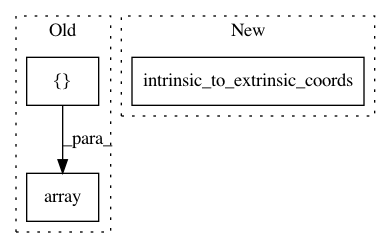

47b90499968190d0dd86641312b5d3fa4d9c3ce3,examples/plot_h2_square.py,,main,#,16
Before Change
points.append(H2.intrinsic_to_extrinsic_coords(np.array([-2.999, -2.999])))
points.append(H2.intrinsic_to_extrinsic_coords(np.array([-2.999, 2.999])))
points.append(H2.intrinsic_to_extrinsic_coords(np.array([2.999, 2.999])))
points.append(H2.intrinsic_to_extrinsic_coords(np.array([2.999, -2.999])))
for i in range(0, 4):
dst = (i+1) % 4
initial_tangent_vec = METRIC.log(points[dst], points[i])
After Change
left = - SQUARE_SIZE / 2.0
right = SQUARE_SIZE / 2.0
corners_int = [(bot, left), (bot, right), (top, right), (top, left)]
corners_ext = H2.intrinsic_to_extrinsic_coords(np.array(corners_int))
n_steps = 10
for i, src in enumerate(corners_ext):
dst_id = (i+1) % len(corners_ext)
dst = corners_ext[dst_id]
In pattern: SUPERPATTERN
Frequency: 3
Non-data size: 3
Instances
Project Name: geomstats/geomstats
Commit Name: 47b90499968190d0dd86641312b5d3fa4d9c3ce3
Time: 2018-04-12
Author: johan.mathe@gmail.com
File Name: examples/plot_h2_square.py
Class Name:
Method Name: main
Project Name: geomstats/geomstats
Commit Name: f968d7bec6552b6986731a4dfbb0a524d01a29a2
Time: 2020-01-16
Author: thomas.l.p.gerald@gmail.com
File Name: examples/plot_kmean_poincare_disk.py
Class Name:
Method Name: main
Project Name: geomstats/geomstats
Commit Name: 84f6528539eb6de89d4c036fd022d8e9e666d294
Time: 2018-04-12
Author: ninamio78@gmail.com
File Name: examples/plot_geodesics_h2.py
Class Name:
Method Name: main